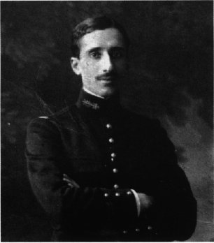

Biographie de Georges Painvin (1886 [Nantes] - 1980 [Paris])
 Georges Painvin est le meilleur cryptologue français de la Première Guerre Mondiale. Il fut aussi un paléontologue et un capitaine d'industrie respecté. Né en 1886 à Nantes, dans une famille de scientifiques dont de nombreux polytechniciens, il réalise des études brillantes et est également en 1902 premier prix de violoncelle au conservatoire de sa ville natale. Reçu en 1905 à l'Ecole Polytechnique, il en ressort parmi les majors de sa promotion et il intègre ensuite l'Ecole des mines de Paris. Il commence alors sa carrière comme professeur de paléontologie d'abord à l'Ecole des mines de Saint-Etienne, puis à l'Ecole des mines de Paris à partir de 1912. Il occupera cette chaire pendant 33 ans. Lorsqu'éclate la Première Guerre Mondiale, Painvin est mobilisé en qualité d'officier d'ordonnance auprès du général Maunoury, qui a établi le quartier général de la 6ème armée à Villers-Cotterets. Painvin se lie alors d'amitié avec le chiffreur, le capitaine Paulier, et il se passionne pour les mystères du chiffre. Immédiatement, il se révèle extrêmement brillant et il fait parvenir au service du chiffr (le fameux cabinet noir), en juillet 1915, un mémoire expliquant comment retrouver la clé du chiffre alors utilisé par les Allemands à partir du premier message envoyé. Il fallait auparavant disposer d'au moins 3 messages chiffrés avec la même clé. Le colonel Cartier, qui dirige le cabinet noir, comprend l'intérêt qu'il aurait à avoir Painvin auprès de lui. Mais ce dernier, qui s'est attaché au général Maunoury, refuse de quitter le quartier général de la 6ème armée et il faut l'intervention du ministre de la guerre pour qu'il finisse par accepter. Au service du chiffre, Painvin réalise des prouesses, venant à bout de tous les chiffres mis en service successivement par les Allemands. Vient l'année 1918. Les Allemands, libérés par l'arrêt des combats avec la Russie sur le front de l'est, savent qu'ils doivent emporter une victoire rapide définitive, avant que les renforts américains ne compliquent leur situation. Ils relancent la guerre de mouvement en mars 1918 en s'appuyant sur un nouveau et redoutable chiffre, baptisé l'ADFGX car il n'utilise que ces lettres. Après plusieurs semaines d'efforts, Painvin finit par comprendre le fonctionnement de ce chiffre. Mais le 1er juin 1918, les allemands changent brutalement leur code en incorporant également la lettre V. La situation est alors critique. Les Allemands sont aux portes de Paris, une offensive est imminente. Plusieurs points d'attaque sont possibles et les alliés ne peuvent concentrer leur défense que sur un seul de ces points. Painvin réussit alors un véritable exploit. En deux jours et une nuit, il vient à bout de l'ADFGVX et déchiffre les télégrammes envoyés le 1er juin. L'un d'eux dit : "Hâtez l'approvisionnement en munitions, le faire même de jour tant que l'on n'est pas vu.". Ce message est destiné à une unité de Tilloloy : c'est là que l'attaque allemande est prévue! Elle a effectivement lieu quelques jours plus tard, mais les alliés ont eu le temps de s'y préparer et ils repoussent l'assaut. L'espoir et l'initiative changent alors de camp, avant la victoire finale quelques mois plus tard! Cet exploit valut à Painvin d'être fait Chevalier de la Légion d'Honneur à titre militaire le 10 juillet 1918 avec la mention: "a depuis le début de la Campagne rendu des services exceptionnels aux Armées". Mais à la sortie de la guerre, il resta complètement secret et Painvin lui-même n'en parla pas pendant presque 50 ans. Au contraire, il continua à être professeur de paléontologie et commença une carrière dans l'industrie qui fut très fructueuse. Ainsi, il fut président de l'union des industries chimiques, de la bourse de commerce de Paris, du crédit commercial de France. Le secret du télégramme déchiffré ne fut révélé que dans les années 1960. Il avait été si bien gardé que l'inventeur allemand du chiffre ADFGX, le colonel Fritz Nebel, ne l'apprit qu'en 1967 lors d'un entretien avec Painvin.Consulter aussi